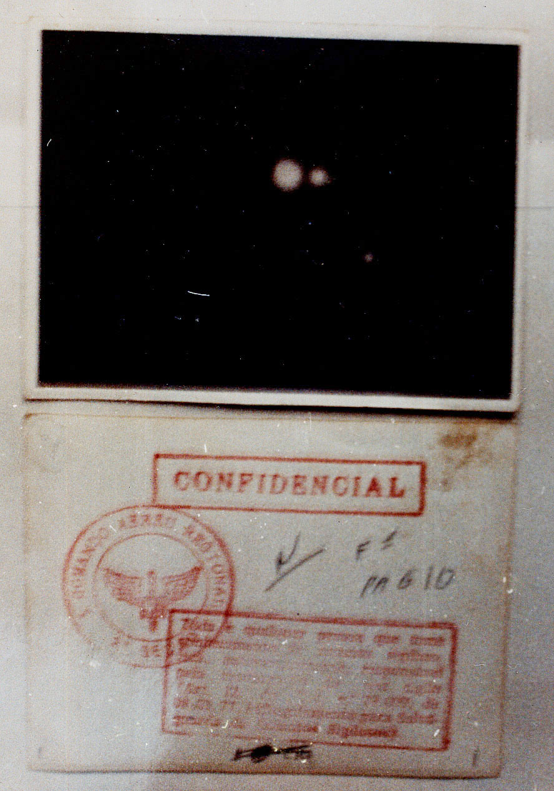

Localizada no Nordeste do estado,acima de Belém,Colares é uma ilha,com belas e tranquilas paisagens,uma ótima culinária típica paraense,principalmente na parte dos pescados,é o lugar ideal para passar um tempo e sair da rotina.Mas além do que ponto turístico para amantes de um bom descanso,esse lugar também atrai muitos olhares dos entusiastas de um mistério,muitos mistérios pra falar a verdade.Isso porque Colares é a cidade com mais relatos de OVNIs (Objeto Voador não Identificado) do país,muito mais até do que a famosa Varginha,chegando até a ser investigada em um documentário na Netflix. Mas afinal,por que toda essa fama?
Cidade dos Aliens

Em 1977,antes de irem diretamente para o litoral do Pará,as estranhas luzes no céu já haviam sido vistas desde o Maranhão. Não demorou muito até esses "raios" ganharem fama e nome,os chupa-chupa.Tal nome se dava pelas dezenas de casos com diferentes sintomas como tumores,queimaduras,desmaios,mas principalmente anemia causada nas pessoas logo após os avistamentos,que segundo moradores chegavam a "ter seu sangue sugado".Tudo parecia ser uma baita história de pescador,até as coisas escalonarem de tamanho e pessoas começarem a morrer.Seja realmente por ataques de seres desconhecidos,ou por pura conicidência,o fato é que à noite os cidadãos viviam com medo e sempre quando diziam ver as luzes começavam a solta fogos,dispararem tiros,bater as panelas,tudo para afastar os OVNIs,e todo esse estresse por si só já aumentava muito os casos de parada cardíaca na região.A situação já estava severa,e a prefeitura não pôde mais ignorar,as froças armadas tinham que ser chamadas.
Operação Prato

Nomeada em referência a objetos misteriosos em formatos de prato,por 4 meses a FAB (Força Aérea Brasileira) coordenou a missão para saber o que estava ocorrendo na área.Liderados pelo capitão Hollanda Lima,durante o dia interrogavam moradores,e pela noite,monitoravam os céus. O evento foi tão marcante que Thiago Luiz Ticchetti,presidente da CBU (Comissão Brasileira de Ufólogos,ufologia é o ramo que estuda eventos desconhecidos nos céus) juntamente com outros especialistas classificam esse como "a maior missão militar para investigar OVNIs que se tem notícia no mundo todo".A tensão provocada pelo caso só aumenta ainda mais quando 20 anos depois,em 1997,Hollanda,o líder da operação abriu o jogo e confirmou diversos objetos voadores incluindo "uma estranha criatura azul" terem sido fotografados e/ou documentados,mas 2 meses depois da revelação o capitão é encontrado morto,sendo suicìdio a causa oficial do óbito.Os documentos sigilosos estão em posse da FAB,e não são abertos a público.Hoje este traumático caso serve para alimentar o turismo na região,como estátuas de ETs nas praias e estabelecimentos referenciando o evento ,como o "restaurante operação prato",tudo isso para relembrar um duvidoso momento da história local,com nenhuma hipótese 100% confirmada,mas sempre sobrando um "e se?".